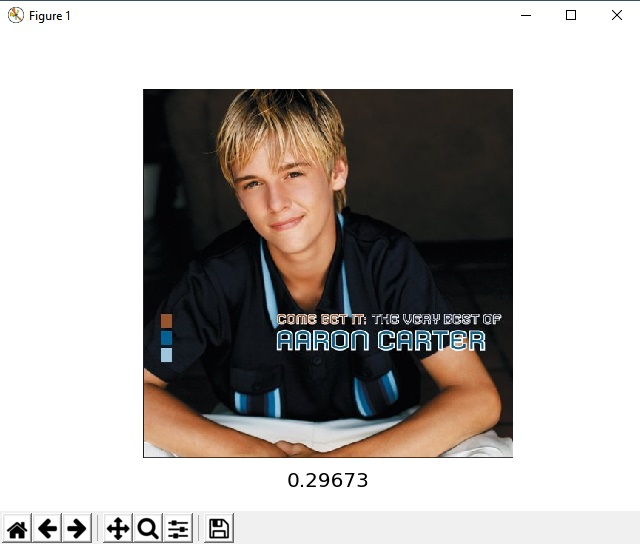

FaceFinder
This project was made during Local Hack Day 2018, at Queen's University. The program is written in Python, and uses the Azure Face api. It compares a face to a list of faces, and gives the closest matching face, along with the similarity percentage.
The image above is the closest match to my face, with the confidence level displayed below it.